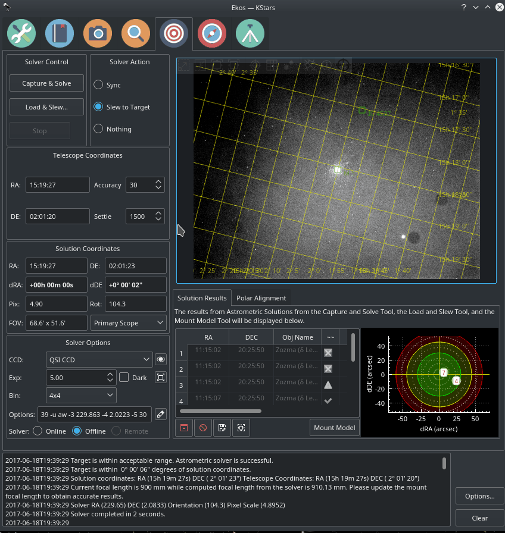
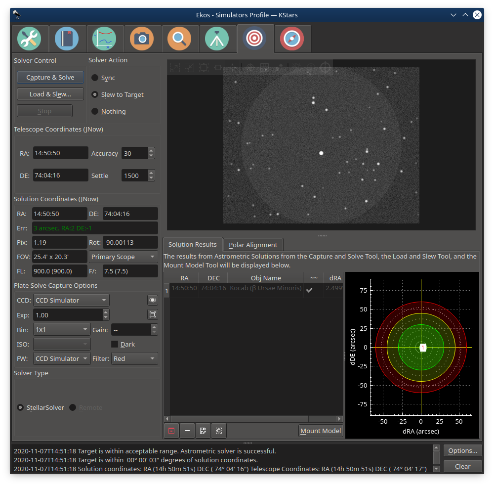
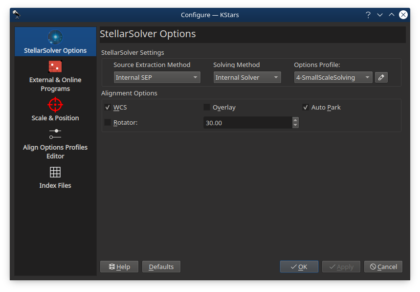
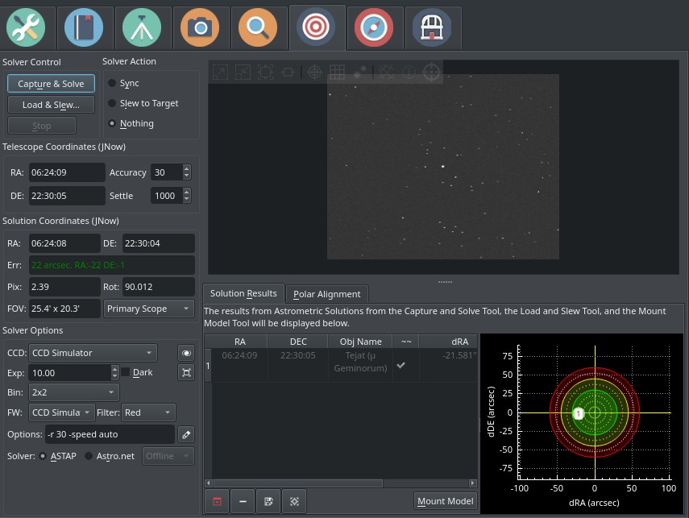
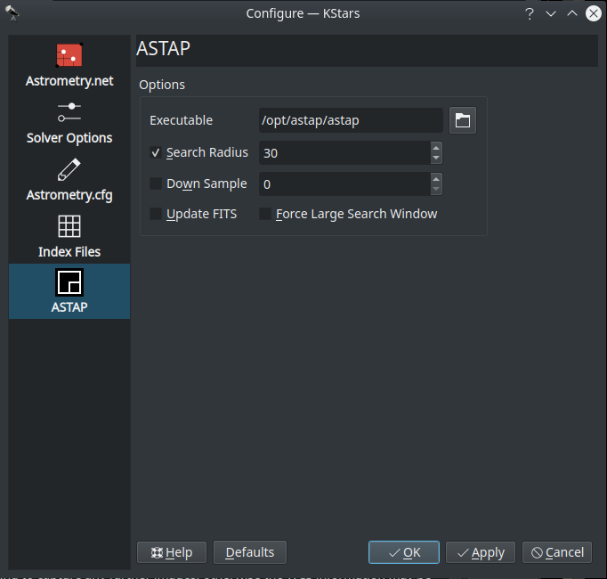
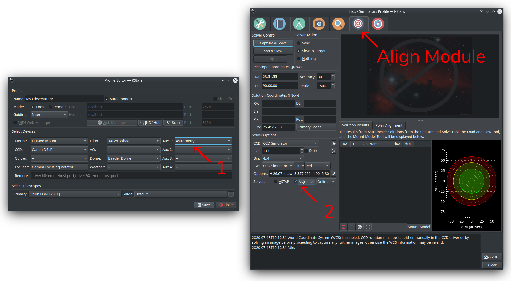
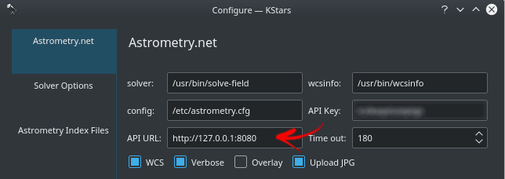
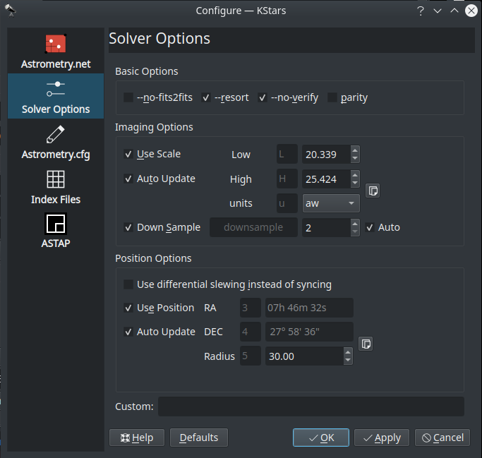
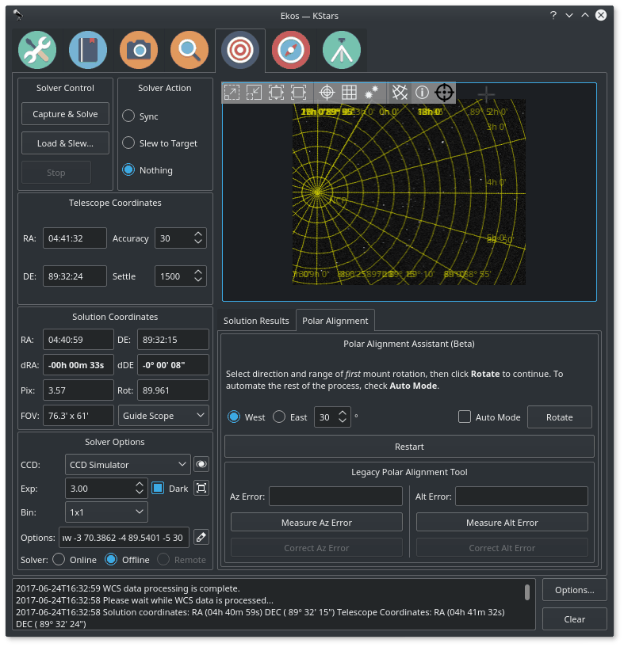

Align
Introduction

Ekos Alignment Module enables highly accurate GOTOs to within sub-arcseconds accuracy and can measure and correct polar alignment errors. This is possible thanks to the astrometry.net solver. Ekos begins by capturing an image of a star field, feeding that image to astrometry.net solver, and getting the central coordinates (RA, DEC) of the image. The solver essentially performs a pattern recognition against a catalog of millions of stars. Once the coordinates are determined, the true pointing of the telescope is known.
Often, there is a discrepancy between where the telescope thinks it is looking at and where it is truly pointing. The magnitude of this discrepancy can range from a few arcminutes to a couple of degrees. Ekos can then correct the discrepancy by either syncing to the new coordinates, or by slewing the mount to the desired target originally requested.
Furthermore, Ekos provides two tools to measure and correct polar alignment errors:
- Polar Alignment Assistant Tool: A very easy tool to measure and correct polar errors. It takes three images near the celestial pole (Close to Polaris for Northern Hemisphere) and then calculates the offset between the mount axis and polar axis.
- Legacy Polar Alignment Tool: If Polaris is not visible, this tool can be used to measure and correct polar alignment errors. It captures a couple of images near the meridian and east/west of the meridian. This will enable the user to adjust the mount until the misalignment is minimized.
At a minimum, you need a CCD/Webcam and a telescope that supports Slew & Sync commands. Most popular commercial telescope nowadays support such commands.
For the Ekos Alignment Module to work, you have an option of either utilizing the online astrometry.net solver, offline, or remote solver
- Online Solver: The online solver requires no configuration, and depending on your Internet bandwidth, it might take a while to upload and solve the image.
- Offline Solver: The offline solver can be faster and requires no Internet connection. In order to use the offline solver, you must install astrometry.net in addition to the necessary index files.
- Remote Solver: The remote solver is an offline solver the resides on a different machine (for example, you can use Astrometry solver on StellarMate). Captured images are solved on the remote machine.
StellarSolver Integration

StellarSolver is an astrometric plate solving library that has been integrated into Ekos in order to provide accurate and efficient offline plate solving.
For plate solving there are several parts in StellarSolver that are important:
Source Extraction
To find the stars in your image in order to solve. In StellarSolver, there are options for 3 different methods:
- Internal SEP: this requires no external programs, it is the same SEP star extraction algorithm that has existed in KStars for Focus and Guiding for awhile now. It is essentially a library version of the method below (though there are some differences which is why they give slightly different results). It is entirely internal to the program, so there are no files saved to disk for the extraction which is great for Raspberry Pis etc.
- External Sextractor: this does require an external program, SExtractor, or the Source Extractor. This is their official standalone program. The drawback is you would need to have sextractor installed and it does save a bunch of files to disk in order to do its operations.
- BuiltIn Sextractor: This uses whatever method of source extraction the solver uses by default. StellarSolver uses SEP, just like the Internal SEP setting. Local astrometry.net uses its own source extraction method which uses a bunch of external resources including python, netpbm and other packages. And finally ASTAP has its own internal source extractor which is pretty good.
Note: Either Internal SEP or External Sextractor should be superior to the built in version of the programs. SExtractor is REALLY good at extracting stars, and that greatly speeds up solving, but it has a LOT of options that we need to perfect.
The Solver
The program that will be used to do the solving of the sources that were found. In StellarSolver, there are 4 options for that
- StellarSolver: This option uses an internal library build of astrometry.net. It uses no external files like configuration files etc, and saves no files to disk (except 0KB solved and cancel files) which is great for Raspberry Pis. Since this library is entirely internal, no programs have to be installed beyond KStars itself, so if you are going to use this option, you don't need the astrometry.net package at all. This is going to make a world of difference for Windows users who cannot install astrometry.net unless they do it in a compatibility layer.
- Local Astrometry.net: This option uses the good old fashioned local astrometry.net installation many users have used with KStars for years. The only differences in Stellarsolver are that we no longer need the configuration files, we can do parallelization to make it MUCH faster, and we can use Internal SEP or External Sextractor to give it the sources to solve.
- Local ASTAP: ASTAP was available in KStars previously, but more options have been implemented for using it in StellarSolver as well as giving you the option to use Internal SEP or SExtractor with it. The options for ASTAP are now shared with astrometry so you can just set your options in the profile and it will work fine. ASTAP does NOT support parallelization.
- Online Astrometry.net: This option was previously available in KStars as well, but a bunch of work has been done on it to make it work better, to use Internal SEP or Sextractor if you like, to use the options in the profiles, and to provide clearer feedback to the user about what is going on. Technically, online Astrometry.net is already using parallelization on their server, so there was no need to implement parallelization for it.
The Options Profiles
Here are the profiles that have been developed:
Profiles mainly for Solving:
1-FastSolving: solve images fast, but it does NOT do parallel solves.
2-ParallelSolving: It can be faster than FastSolving, but does not work nearly as well as the next 2.
3-ParalleLargeScale: This profile is meant to solve DSLR scale images very fast. It assumes larger image scales to solve faster than the above.
4-ParallelSmallScale: The DEFAULT for solving. This profile is meant to solve telescopic images quickly. Most users should probably use this one.
Profiles mainly for Source Extraction in Focus and Guide
5-AllStars: This profile is meant to detect all the stars in an image.
6-SmallSizedStars: detects smaller stars and ignores bigger stars
7-MidSizedStars: detects medium sized stars
8-BigSizedStars: detects bigger stars and ignores smaller stars

ASTAP Integration

ASTAP is an astrometric plate solver, stacking of images, photometry, and FITS Viewer application available for Windows, MacOS, and Linux on multiple architectures.
Ekos included support for solving via ASTAP in the Align module in addition to the existing astrometry.net solver. ASTAP employs a different method to solve images making it extremely fast while at the same time requiring a smaller star catalog compared to other astrometric solvers.
You need to download and install the G17 Star Catalog for ASTAP to work locally.
ASTAP Solver Settings

The ASTAP Solver Settings page can be accessed by clicking on the Options button on the bottom-right corner. It has the following options:
- Search Radius: The program will search in a square spiral around the start position up to this radius.
- Down Sample: Down sample prior to solving. Also called binning. A zero value will result in auto selection downsampling.
- Update FITS: Update the fits header with the found solution.
- Force Large Search Window: Improve solving reliability in some cases. Search window will be large with overlap but it can slow down solving.
Get astrometry.net
|
Note |
Astrometry.net is already shipped with StellarMate so there is no need to install it. Index files from 16 arcminutes and above (4206 to 4019) are included with StellarMate. For any additional index files, you need to install them as necessary. To use Astrometry in StellarMate from a remote Ekos on Linux®/Windows®/Mac® OS, make sure to select Remote option in Ekos Alignment Module. Furthermore, make sure that the Astrometry driver is selected in your equipment profile. |

- Windows®
- To use astrometry.net under Windows, you need to download and install the ANSVR Local Astrometry.net solver. The ANSVR mimics the astrometry.net online server on your local computer; thus the internet not required for any astrometry queries.
After installing the ANSVR server and downloading the appropriate index files for your setup, make sure ANSVR server is up and running and then go to Ekos Alignment options where you can simply change the API URL to use the ANSVR server as illustrated below:

In Ekos Align module, you must set the solver type to Online so that it uses the local ANSVR server for all astrometry queries. Then you can use the align module as you would normally do.
Remember as indicated above that StellarMate already includes astrometry.net. Therefore, if you would like to use StellarMate remotely to solve your images, simply change solver type to Remote and ensure that your equipment profile includes Astrometry driver which can be selected under the Auxiliary dropdown. This is applicable to all operating systems and not just Windows®.
- Mac® OS
- Astrometry.net is already included with KStars for Mac® OS, so no need to install it.
- Linux®
- Astrometry.net is already included with KStars bleeding version. But if astrometry is not installed, then you can install it by running the following command under Ubuntu:
sudo apt-get install astrometry.net
Download Index Files
For offline (and remote) solvers, index files are necessary for the solver to work. The complete collection of index files is huge (over 30 GB), but you only need to download what is necessary for your equipment setup. Index files are sorted by the Field-Of-View (FOV) range they cover. There are two methods to fetch the necessary index files: The new download support in Align module, and the old manual way.
Automatic Download

Automatic download is only available for Ekos users on Linux® & Mac® OS. For Windows® users, please download ANSVR solver.
To access the download page, click the Options button in the Align module and then select Astrometry Index Files tab. The page displays the current FOV of your current setup and below it a list of available and installed index files. Three icons are used to designate the importance of index files given your current setup as follows:
 Required
Required- Recommended
 Optional
Optional
You must download all the required files, and if you have plenty of hard drive space left, you can also download the recommended indexes. If an index file is installed, the checkmark shall be checked, otherwise check it to download the relevant index file. Please only download one file at a time, especially for larger files. You might be prompted to enter the administrator password (default in StellarMate is smate) to install the files. Once you installed all the required files, you can begin using the offline astrometry.net solver immediately.
Manual Download
You need to download and install the necessary index files suitable for your telescope+CCD field of view (FOV). You need to install index files covering 100% to 10% of your FOV. For example, if your FOV is 60 arcminutes, you need to install index files covering skymarks from 6 arcminutes (10%) to 60 arcminutes (100%). There are many online tools to calculate FOVs, such as Starizona Field of View Calculator.
Index Filename |
FOV (arcminutes) |
Debian Package |
index-4219.fits |
1400 - 2000 |
|
index-4218.fits |
1000 - 1400 |
|
index-4217.fits |
680 - 1000 |
|
index-4216.fits |
480 - 680 |
|
index-4215.fits |
340 - 480 |
|
index-4214.fits |
240 - 340 |
|
index-4213.fits |
170 - 240 |
|
index-4212.fits |
120 - 170 |
|
index-4211.fits |
85 - 120 |
|
index-4210.fits |
60 - 85 |
|
index-4209.fits |
42 - 60 |
|
index-4208.fits |
30 - 42 |
|
index-4207-*.fits |
22 - 30 |
|
index-4206-*.fits |
16 - 22 |
|
index-4205-*.fits |
11 - 16 |
|
index-4204-*.fits |
8 - 11 |
|
index-4203-*.fits |
5.6 - 8.0 |
|
index-4202-*.fits |
4.0 - 5.6 |
|
index-4201-*.fits |
2.8 - 4.0 |
astrometry-data-4201-1 astrometry-data-4201-2 astrometry-data-4201-3 astrometry-data-4201-4 |
index-4200-*.fits |
2.0 - 2.8 |
astrometry-data-4200-1 astrometry-data-4200-2 astrometry-data-4200-3 astrometry-data-4200-4 |
The Debian packages are suitable for any Debian-based distribution (Ubuntu, Mint, etc.). If you downloaded the Debian Packages above for your FOV range, you can install them from your favorite package manager, or via the following command:
sudo dpkg -i astrometry-data-*.deb
On the other hand, if you downloaded the FITS index files directly, copy them to /usr/share/astrometry directory.
Note
It is recommended to use a download manager as such DownThemAll! for Firefox to download the Debian packages as browsers' built-in download manager may have problems with download large packages.
How to Use?
Ekos Align Module offers multiple functions to aid you in achieving accurate GOTOs. Start with your mount in home position with the telescope tube looking directly at the celestial pole. For users in Northern Hemisphere, point the telescope as close as possible to Polaris. It is not necessary to perform 2 or 3 star alignments, but it can be useful for some mount types. Make sure your camera is focused and stars are resolved.
- Capture & Solve: Capture an image and determine what region in the sky the telescope is exactly looking at. The astrometry results include the equatorial coordinates (RA & DEC) of the center of the captured image in addition to pixel scale and field rotation. Depending on the Solver Action settings, the results can be used to Sync the mount or Sync and then Slew to the target location. For example, suppose you slewed the mount to Vega then used Capture & Solve. If the actual telescope location is different from Vega, it will be first synced to the solved coordinate and then Ekos shall command the mount to slew to Vega. After slew is complete, the Alignment module will repeat Capture & Solve process again until the error between reported and actual position falls below the accuracy thresholds (30 arcseconds by default).
- Load & Slew: Load a FITS or JPEG file, solve it, and then slew to it.
- Polar Alignment Assistant: A simple tool to aid in polar alignment of German Equatorial Mounts.
- Legacy Polar Alignment Tool: Measure polar alignment error when a view of the celestial pole (e.g. Polaris for Northern Hemisphere) is not available.
|
WARNING |
Never solve an image at or near the celestial pole (unless Ekos Polar Alignment Assistant Tool is used). Slew at least 20 degrees away from the celestial pole before solving the first image. Solving very close to the poles will make your mount pointing worse so avoid it. |
Alignment Settings
Before you begin the alignment process, select the desired CCD & Telescope. You can explore astrometry.net options that are passed to the astrometry.net solver each time an image is captured:
- CCD: Select CCD to capture from
- Exposure: Exposure duration in seconds
- Accuracy: Acceptable difference between reported telescope coordinate and actually solved coordinate.
- Bin X: Set horizontal binning of the CCD
- Bin Y: Set vertical binning of the CCD
- Scope: Set the active telescope in case you have different Primary and Guide scopes. FOV is re-calculated when selecting a different telescope.
- Options: Options that are passed to the astrometry.net solver. Click the edit button to explore the options in detail.
- Solver: Select solver type (Online, Offline, Remote). The remote solver is only available when connecting to a remote device.
By default, the solver will search all over the sky to determine the coordinates of the captured image. This can take a lot of time; therefore, in order to speed up the solver, you can restrict it to only search within a specified area in the sky designated by the RA, DEC, and Radius options above.
Astrometry.net Options
Options for offline and online solvers.
Most of the options are sufficient by default. If you have astrometry.net installed in a non-standard location, you can change the paths as necessary.
- Use Sextractor not python: This allows you to use Sextractor to make XY Lists in order to avoid using python with astrometry.net. It vastly improves the solver speed. This is a good option to be enabled on MacOS since they don't need to install python.
- Rotator: Rotator threshold in arc-minutes when using Load & Slew. If the difference between measured position angle and FITS position angle is below this value, the Load & Slew operation is considered successful.
- Time out: Timeout in seconds to wait for astrometry solver to complete.
- WCS: World-Coordinate-System is a system for embedding equatorial coordinate information within the image. Therefore, when you view the image, you can hover it and view the coordinate for each pixel. You can also click anywhere in the image and command to the telescope to slew there. It is highly recommended to keep this option on.
- Overlay: Overlay captured images unto the sky map of KStars.
- Upload JPG: When using online astrometry.net, upload all images are JPEGs to save bandwidth as FITS images can be large.
- Auto Park: Automatically park the mount after completing Polar Alignment Assistant Tools.
|
WARNING |
Turning Auto Park off might lead to inaccurate results. |
Solver Options
Ekos selects and updates the optimal options by default to accelerate the performance of the solver. You may opt to change the options that are passed to the solver in case the default options are not sufficient.

Basic Options
- --no-fits2fits: This option should ONLY be checked if your astrometry.net version is 0.67 or earlier. Uncheck for any versions greater than 0.67.
- --resort: Check this option if your image does not have much nebulosity. If it does have strong nebulosity, uncheck it.
- --no-verify: This will prevent the solver from looking at an already existing WCS Header before blindly trying to solve the image. It is recommended to keep it checked.
- parity: Detect parity and reuse it to speed up solver.
Imaging Options
- Use Scale: Set image scale to speed up solver as it does not have to search index files of different image scales.
- Low: The lower end of the imager scale, calculated as a little smaller than the shorter dimension of the image.
- High: The high end of the imager scale, calculated as a little bigger than the longer dimension of the image.
- Units: The units of the imager scale bounds above.
- dw: degree width
- aw: arcminute width
- app: arcsecs per pixel
- Copy to clipboard: Update Image Scale Bounds from the currently active camera and telescope combination.
- Auto Update: Automatically update image scale values when CCD and/or Mount parameters are updated.
- Down Sample: Downsample the image to shrink its size and speed up the solver.
- Auto: Automatically determine downsample value based on image size
Position Options
- Use differential slewing instead of syncing: Do not use Sync when Slew to Target is selected. Use differential slewing to correct for discrepancies. This is useful on some mounts (e.g. Paramount).
- Use Position: Set estimated position to speed up astrometry solver as it does not have to search in other areas of the sky.
- RA: The RA of the Estimated Telescope/Image Field Position in hh:mm:ss notation
- DEC: The DEC of the Estimated Telescope/Image Field Position in dd:mm:ss notation
- Radius: The Search Radius for the Estimated Telescope/Image Field Position in degrees.
- Copy to clipboard: Update coordinates to the current telescope position.
- Auto Update: Automatically update position coordinates when mount completes slewing.
- Custom: Additional optional astrometry.net options.
Capture & Solve
Using Ekos Alignment Module, aligning your mount using the controller's 1, 2, or 3 star alignment is not strictly necessary, though for some mounts it is recommended to perform a rough 1 or 2 star alignment before using Ekos alignment module. If you are using EQMod, you can start using Ekos alignment module right away. A typical workflow for GOTO alignment involves the following steps:
- Set your mount to its home position (usually the NCP for equatorial mounts)
- Select Slew to Target in the Solver Action.
- Slew to a nearby bright star.
- After slew is complete, click Capture & Solve.
If the solver is successful, Ekos will sync and then slew to the star. The results are displayed in the Solution Results tab along with a bullseye diagram that shows the offset the reported telescope coordinates (i.e. where the telescope thinks it is looking at) vs. its actual position in the sky as determined by the solver.
Each time the solver is executed and returns successful results, Ekos can run on the following actions:
- Sync: Syncs the telescope coordinates to the solution coordinates.
- Slew to Target: Syncs the telescope coordinates to the solution coordinates and then slew to the target.
- Nothing: Just solve the image and display the solution coordinates.
Troubleshooting
Sometimes, the solver would fail to solve an image for various reasons. Here are some tips to get you started in the right direction:
- Do you have the correct index files installed for your FOV? By default StellarMate come preinstalled with index files 4206 to 4219, but if your FOV is on the narrower scale, you might need to install more index files.
- Do the RA/DE coordinates of the telescope in Alignment Module make sense? By default, the solver searches within 30 degrees of the current mount location. If the mount is way off in the sky, the solver would fail. If this happens, go back to your parking home position and then slew to a nearby star. If the star is off by more than 30 degrees, then there is something wrong with the mount, time, and location settings so check each of those.
- Check the quality of your image, does it have suffcient stars? Astrometry.net can work with minimal data, but if there is a lot of noise and very few stars, it might struggles to find a solution. Try increasing exposure time to compensate.
- Increase binning to the maximum supported by your camera.
- Increase exposure time to 10 seconds or more.
- Enable Dark Frame option to clean up the image before sending it to the solver.
- Perform rough Polar Alignment before using the alignment module.
- Automatic downsampling is turned on by default. It essentially reduces the size of your image before it is fed to the solver. For most users, this option improves solver efficiency. However, it can create issues for others. Go to Astrometry options and turn off automatic downsampling and if that doesn't work, try turning off downsampling completely.
Polar Alignment
Polar Alignment Assistant
When setting up a German Equatorial Mount (GEM) for imaging, a critical aspect of capturing long-exposure images is to ensure proper polar alignment. A GEM mount has two axis: Right Ascension (RA) axis and Declination (DE) axis. Ideally, the RA axis should be aligned with the celestial sphere polar axis. A mount's job is to track the star's motion around the sky, from the moment they rise at the eastern horizon, all the way up across the median, and westward until they set.
In long exposure imaging, a camera is attached to the telescope where the image sensor captures incoming photons from a particular area in the sky. The incident photons have to strike the same photo-site over and over again if we are to gather a clear and crisp image. Of course, actual photons do not behave in this way: optics, atmosphere, seeing quality all scatter and refract photons in one way or another. Furthermore, photons do not arrive uniformly but follow a Poisson distribution. For point-like sources like stars, a point spread function describes how photons are spatially distributed across the pixels. Nevertheless, the overall idea we want to keep the source photons hitting the same pixels. Otherwise, we might end up with an image plagued with various trail artifacts.

Since mounts are not perfect, they cannot perfectly keep track of object as it transits across the sky. This can stem from many factors, one of which is the misalignment of the mount's Right Ascension axis with respect to the celestial pole axis. Polar alignment removes one of the biggest sources of tracking errors in the mount, but other sources of error still play a factor. If properly aligned, some mounts can track an object for a few minutes with the only deviation of 1-2 arcsec RMS.
However, unless you have a top of the line mount, then you'd probably want to use an autoguider to keep the same star locked in the same position over time. Despite all of this, if the axis of the mount is not properly aligned with the celestial pole, then even a mechanically-perfect mount would lose tracking with time. Tracking errors are proportional to the magnitude of the misalignment. It is therefore very important for long exposure imaging to get the mount polar aligned to reduce any residual errors as it spans across the sky.
Before starting the process, point the mount as close as possible to the celestial pole. If you are living in the Northern Hemisphere, point it as close as possible to Polaris.
The tool works by capturing and solving three images. After capturing each, the mount rotates by a fixed amount and another image is captured and solved.

After the first capture, you can rotate the mount by a specific amount (default 30 degrees) either West or East. After selecting the magnitude and direction, click Next to continue and the mount will be rotated. Once the rotation is complete you shall be asked to take another capture, unless you have checked Auto Mode. In Automated mode, the rest of the process will continue with the same settings and direction until a total of three images are captured.
Since the mount's true RA/DE are resolved by astrometry, we can construct a unique circle from the three centers found in the astrometry solutions. The circle's center is where the mount rotates about (RA Axis) and ideally, this point should coincide with the celestial pole. However, if there is a misalignment, then Ekos draws a correction vector. This correction vector can be placed anywhere in the image. Next, refresh the camera feed and make corrections to the mount's Altitude and Azimuth knobs until the star is located in the designated cross-hair. To make it easy to make corrections, expand the view by clicking on the Fullscreen button 

If you are away from StellarMate or PC, you can use your Tablet to monitor the camera feed while making corrections. Use the StellarMate's web-based VNC viewer or use any VNC Client on your tablet to access StellarMate. If Ekos is running on your PC, you can use applications like TeamViewer to achieve the same results. The following is a video demonstrating how to utilize the Polar Alignment Assistant tool.
Polar Alignment
Legacy Polar Alignment Workflow
Using the Polar Alignment mode, Ekos can measure and correct the polar alignment errors. To measure Azimuth error, point your mount to a star close to the meridian. If you live in the northern hemisphere, you will point the mount toward the southern meridian. Click on Measure Az Error to begin the process. Ekos will try to measure the drift between two images and calculates the error accordingly. You can ask Ekos to correct Azimuth error by clicking on the Correct Az Error button. Ekos will slew to a new location and asks you to adjust the mount's azimuth knobs until the star is in the center of the Field of View. You can use the Focus Module's Framing feature to take a look at the image as you make your adjustments.
Similarly, to measure Altitude error, click on the Measure Alt Error button. You need to point your mount either east or west and set the Altitude Direction combo box accordingly. Ekos will take two images and calculates the error. You can ask Ekos to correct Altitude error by clicking on the Correct Alt Error button. As with Azimuth correction, Ekos will slew to a new location and asks you to adjust the mount's altitude knobs until the star is in the center of the FOV.
After making a correction, it is recommended to measure the Azimuth and Altitude errors again and gauge the difference. You may need to perform the correction more than once to obtain optimal results.
Before starting the Polar Alignment tool, you must complete the GOTO Workflow above for at least one point in the sky. Once your mount is aligned, proceed with the following (assuming you live in the northern hemisphere):
- Slew to a bright star (4th magnitude or below) near the southern meridian (Azimuth 180). Make sure Slew to Target is selected. Capture and solve. The star should be exactly centered in your CCD field of view.
- Switch mode to Polar Alignment. Click Measure Az Error. It will ask you to slew to a star at the southern meridian which we already done. Click Continue. Ekos will now perform the error calculation.
- If all goes well, the error is displayed in the output boxes. To correct for the error, click Correct Az Error. Ekos will now slew to a different point in the sky, and you will be required to ONLY adjust the mount's azimuth knobs to center the star in the field of view. The most convenient way of monitoring the star field is by going to the Focus module and clicking Start Framing. If the azimuth error is great, the star might not be visible in the CCD field of view, and therefore you have to make blind adjustments (or simply look through the finderscope) until the star enters the CCD FOV.
- Begin your azimuth adjustments until the bright star you slewed to initially is as close to center as you can get it.
- Stop Framing in the Focus module.
- Repeat the Measure Az Error to ensure we indeed corrected the error. You might have to run it more than once to ensure the results are valid.
- Switch mode to GOTO.
- Now slew to a bright star either on the eastern or western horizon, preferably above 20 degrees of altitude. It has to be as close as possible to the eastern (90 azimuth) or western (270) cardinal points.
- After slew is complete, capture and solve. The star should be dead center in the CCD FOV now.
- Switch mode to Polar Alignment.
- Click Measure Alt Error. It will ask you to slew to a star at either the eastern (Azimuth 90) or western (Azimuth 270) horizon which we already done. Click Continue. Ekos will now perform the error calculation.
- To correct for the error, click Correct Alt Error. Ekos will now slew to a different point in the sky, and you will be required to ONLY adjust the mount's altitude knobs to center the star in the field of view. Start framing as done before in the Focus module to help you with the centering.
- After centering is complete, stop framing.
- Repeat the Measure Alt Error to ensure we indeed corrected the error. You might have to run it more than once to ensure the results are valid.
- Polar alignment is now complete!
|
WARNING |
The mount may slew to a dangerous position and you might risk hitting the tripod and/or other equipment. Carefully monitor the mount's motion. Use at your own risk. |